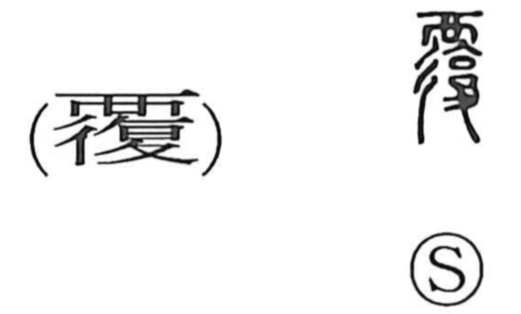

覆

Kun: oou, kutsugaesu, kutsugaeru | On: fuku
to cover ・ to overturn ・ to capsize
Explanation
覆 is a phono‑semantic character. The phonetic element 復 supplies the on reading fuku (as in hanpuku, “repetition”), while the semantic element 襾 depicts a lid closing the mouth of a vessel, conveying the act of covering. Classical glosses also explain it as “to overturn, capsize,” and early forms show earth piled over a figure lying on its back—an image of covering. Thus the character means to cover, and by extension to turn something over, a nuance reflected in compounds like hanpuku.